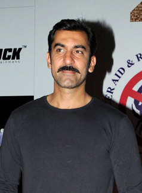

Shah Rukh Khan, also known by the initialism SRK, is an Indian actor, film producer, and television personality who works in Hindi films. Khan was born 2 November 1965 in New Delhi, India
Khan began his career with appearances in several television series in the late 1980s. He made his Bollywood debut in 1992 with Deewana.Khan was recognised for portraying villainous roles in the films Baazigar (1993), Darr (1993), and Anjaam (1994).
Kajol as Meera
Kajol Devgn (Née Mukherjee; born 5 August 1974), known as the famous Kajol, is an Indian film actress. Described in the media as one of the most successful actresses of Hindi cinema.
Kajol won six Filmfare Awards, among which she holds the record for most Best Actress awards previously set by her late aunt Nutan. In 2011, she was honoured with Padma Shri, the fourth highest civilian honour of the country, by the Government of India.

Nawab Shah as Raghav Ahuja
Nawab Shah is an Indian film actor, who works in Hindi, Malayalam, Tamil, Telugu and Kannada-language films and television series. Shah was born on 12 0ctober 1972 in India.
Nawab Shah was signed to play a villain in Salman Khan's Bodyguard. He, however, had an accident and was unable to continue with the film. Later that year, he played another negative role as Jabbar, in Don 2, which starred Shah Rukh Khan in the lead. His performance was praised, and the film became a high commercial success.